Estudios de Ecografía (Ultrasonido)
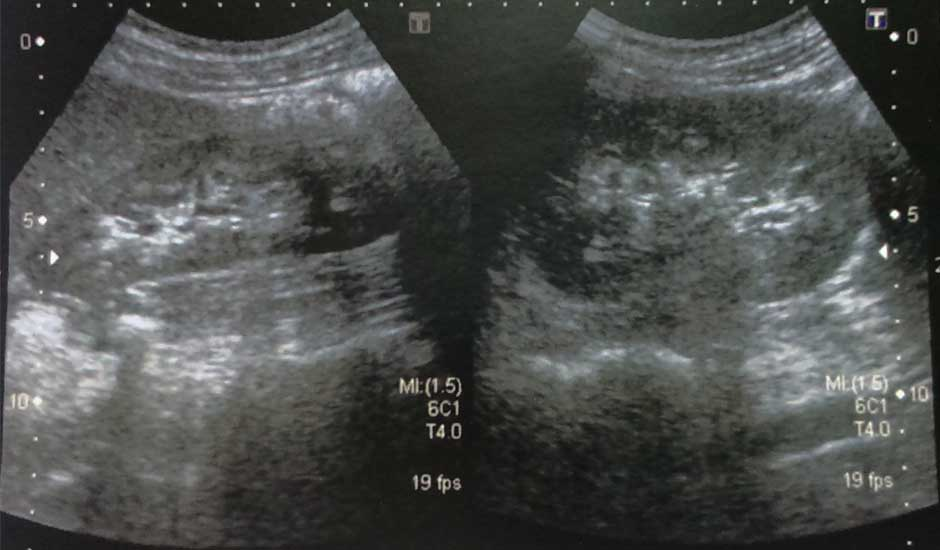
Ecografía Abdominal
Evaluación de hígado, vesícula, vías biliares, páncreas y bazo. Transductor Convexo (3.5 MHz). Ayuno estricto de 6 horas.
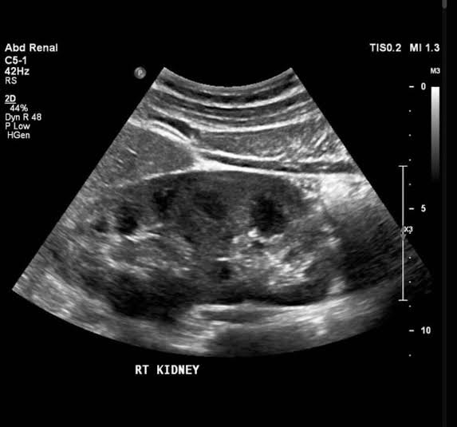
Ecografía Renal y Vesical
Estudio de parénquima renal, sistema pielocalicial, vejiga y medición de residuo postmiccional. Requiere retención urinaria (vejiga llena).
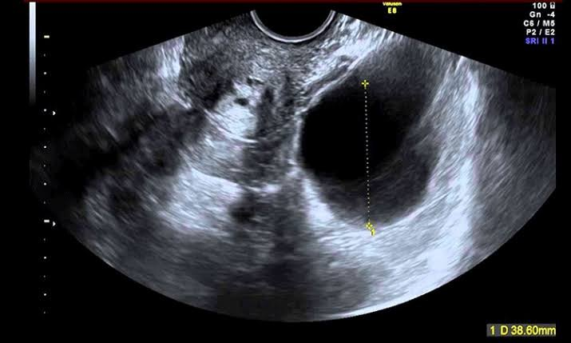
Ecografía Pélvica
Estudio de útero, ovarios, vejiga y próstata. Transductor Convexo o Endocavitario. Requisito fundamental: vejiga llena (1.5L de agua).
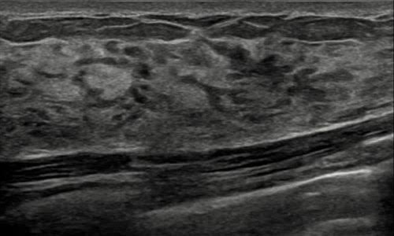
Ecografía Mamaria y Axilar
Evaluación de parénquima mamario, nódulos, quistes y ganglios axilares. Transductor Lineal de alta frecuencia (10 - 15 MHz). Sin preparación previa.
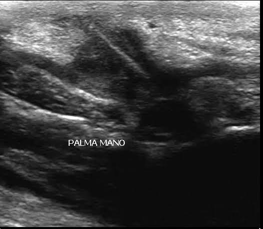
Ecografía de Partes Blandas y Pequeñas Partes
Evaluación de tiroides, glándulas salivales, ganglios cervicales y masas subcutáneas. Transductor Lineal de Alta Frecuencia (7.5 - 12 MHz). Sin ayuno.
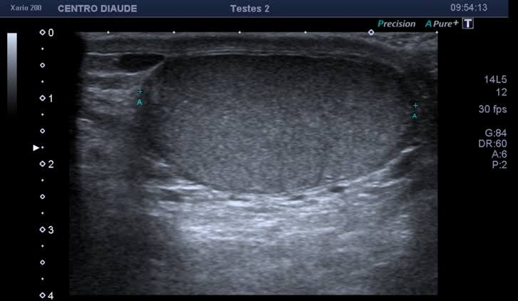
Ecografía Testicular / Escrotal (y Doppler)
Estudio bilateral comparativo de testículos, epidídimo y plexo pampiniforme (torsión testicular, varicocele, hidrocele). Transductor Lineal.
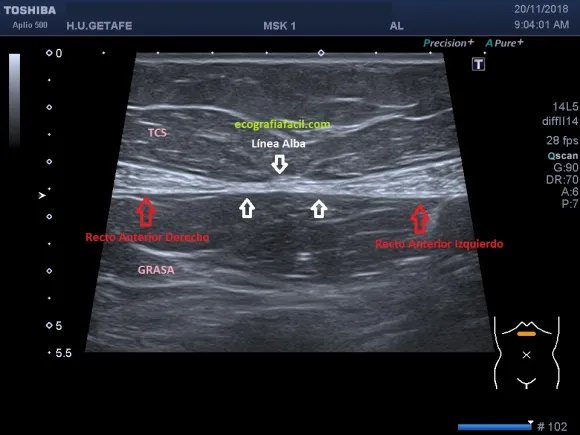
Ecografía de Pared Abdominal e Inguinal (Hernias)
Detección de defectos aponeuróticos y sacos herniarios (umbilical, epigástrica, inguinal). Evaluación dinámica con maniobra de Valsalva y bipedestación.
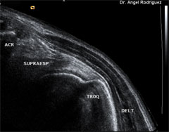
Ecografía Músculo-Esquelética (MSK)
Estudio de tendones, ligamentos, músculos y articulaciones (hombro, rodilla, tobillo). Transductor Lineal de alta resolución. Evaluación dinámica.
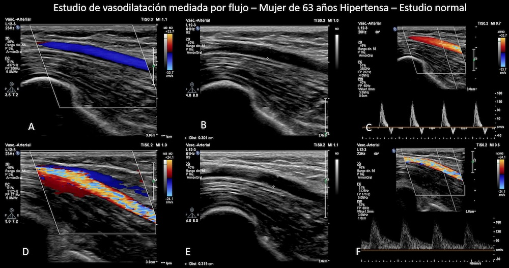
Ecografía Vascular Periférica y Abdominal (Doppler)
Análisis de flujo sanguíneo arterial y venoso (TVP, estenosis, aneurismas). Evaluación con Doppler Color, Poder y Espectral.
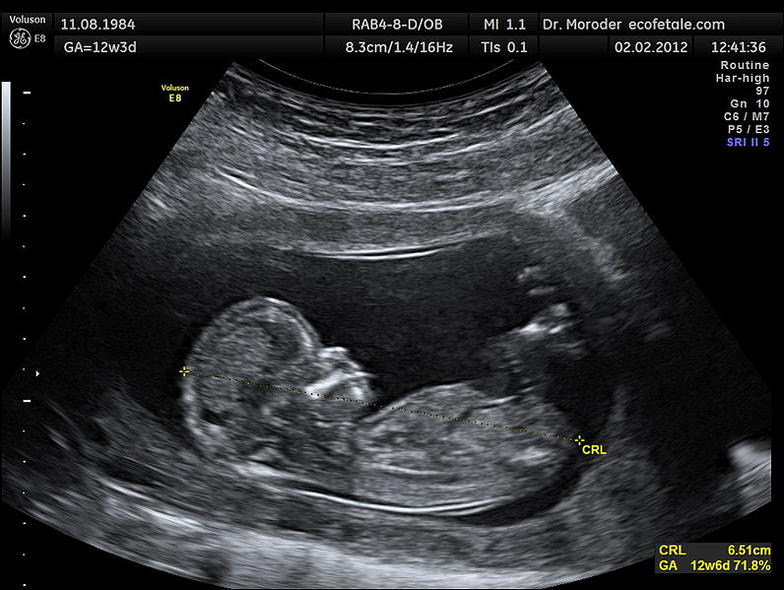
Ecografía Obstétrica
Seguimiento del desarrollo embrionario y fetal, placenta y líquido amniótico. Transductor Convexo / Endovaginal según edad gestacional.
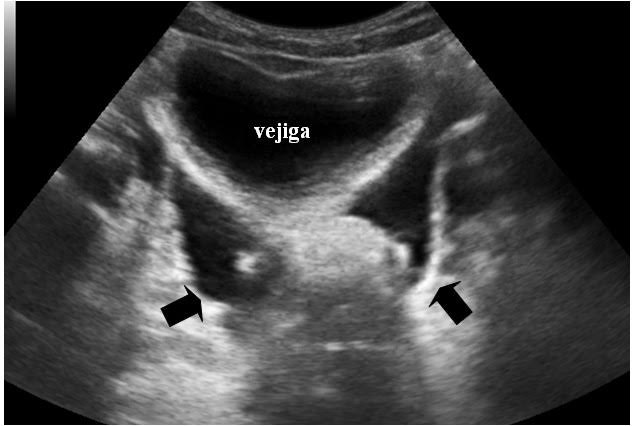
Ecografía Pediátrica (Caderas / Transfontanelar)
Tamizaje de displasia del desarrollo de caderas (Método de Graf) y neurosonografía neonatal a través de fontanela anterior.